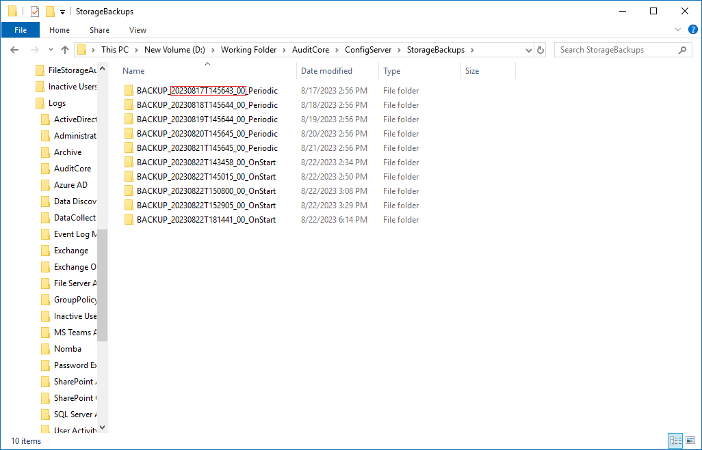

Symptom
Monitoring plans in Netwrix Auditor are either missing, not showing, or have disappeared after an update, upgrade, or a backup.
Cause
The Configuration file was corrupted.
Resolution
Refer to the following steps to restore your monitoring plans:
-
In your Netwrix Auditor server, stop all Netwrix Auditor services. In elevated PowerShell, run the following command:
Stop-Service -Displayname Netwrix* -
Navigate to the ConfigServer folder of your Working Folder, located by default in
C:\ProgramData\Netwrix Auditor\AuditCore\ConfigServer.-
In case your Working Folder was moved, click the Health Status menu in the main Netwrix Auditor screen, and click Open diagnostic logs folder under the Working folder tab. Once the Logs folder opens, go to the parent folder, and follow the mentioned path.
-
-
Create a backup of the Configuration file located in the ConfigServer folder.
-
Once you've backed up the file, navigate to the StorageBackups folder of your Working Folder, located by default in
C:\ProgramData\Netwrix Auditor\AuditCore\ConfigServer\StorageBackups. -
Select the folder specifying the date before you've encountered the issue, and open the folder. Proceed to the next folder, copy the Configuration file, and paste it to the
C:\ProgramData\Netwrix Auditor\AuditCore\ConfigServerfolder to replace the corrupted file. -
Once you've copied the file, run the following command in elevated PowerShell to restart the services:
Start-Service -Displayname Netwrix*